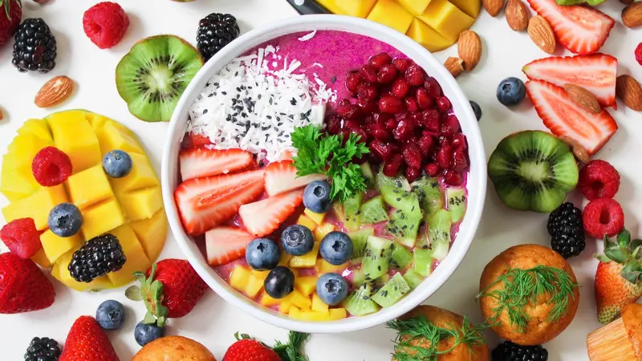

Salad Buah Segar
Bahan-bahan:
- 1 buah apel, potong dadu
- 1 buah pir, potong dadu
- 1/2 buah melon, potong dadu
- 1/2 buah semangka, potong dadu
- 100 gram anggur, belah dua
- 100 gram stroberi, potong-potong
- 2 sendok makan madu
- 1 sendok makan air lemon
- Yogurt rendah lemak sebagai pelengkap
Cara Membuat:
- Campurkan semua buah yang sudah dipotong dalam mangkuk besar.
- Tambahkan madu dan air lemon, aduk hingga merata.
- Diamkan di dalam lemari es selama 30 menit agar dingin dan segar.
- Sajikan dengan tambahan yogurt rendah lemak di atasnya.

Smoothie Bowl
Bahan-bahan:
- 1 buah pisang beku
- 100 gram blueberry beku
- 100 gram stroberi beku
- 200 ml susu almond
- 2 sendok makan granola
- 1 sendok makan chia seed
- 1/2 buah kiwi, iris tipis
- 1 sendok makan selai kacang (opsional)
Cara Membuat:
- Blender pisang, blueberry, stroberi, dan susu almond hingga halus.
- Tuang ke dalam mangkuk.
- Tambahkan granola, chia seed, irisan kiwi, dan selai kacang di atasnya.
- Sajikan segera.

Sayur Sop
Bahan-bahan:
- 1 buah wortel, potong bulat
- 1 buah kentang, potong dadu
- 100 gram buncis, potong-potong
- 1 buah tomat, potong-potong
- 100 gram kol, potong-potong
- 2 siung bawang putih, cincang halus
- 1/2 buah bawang bombay, cincang halus
- 1 liter air kaldu ayam
- Garam dan merica secukupnya
- Daun seledri dan daun bawang secukupnya, iris halus
- Minyak untuk menumis
Cara Memasak:
- Panaskan sedikit minyak, tumis bawang putih dan bawang bombay hingga harum.
- Tambahkan air kaldu ayam, masak hingga mendidih.
- Masukkan wortel dan kentang, masak hingga setengah empuk.
- Tambahkan buncis, kol, dan tomat, masak hingga semua sayuran empuk.
- Bumbui dengan garam dan merica sesuai selera.
- Masukkan daun seledri dan daun bawang, aduk rata, angkat.
- Sajikan sayur sop selagi hangat.